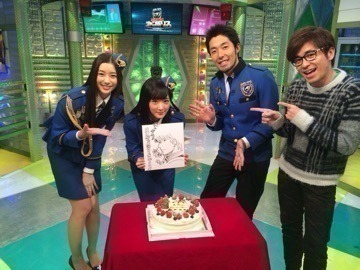
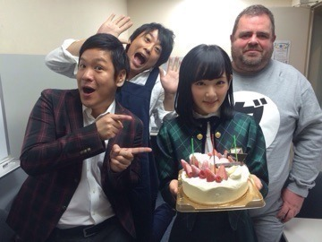

| 2014/12 22 Mon | 心がポカポカしまし た( ˘ω˘ )♡ |
生駒です！！
インフルで約5日間家に閉じこもっていたせいか、、、
体が追いつきません笑笑
動け生駒シャンとしなはれ
最近は、
有線大賞
MUSIC FOR ALL,ALL FOR ONE2014がありましたヽ(・∀・)ノ
MUSIC FOR ALL,ALL FOR ONE2014は私にとっては久しぶりの、今年初めてのクリスマスライブ！！
今年で3回目の出演でした！！
毎年ありがとうございますヽ(・∀・)ノ
楽しかったけど、自分の力が全然出せなくて、、、
もっともっとしっかりしないとダメだなと反省です！！
来てくださった、見てくださった皆さんありがとうございました

有線大賞は今年が初めてでした！！
気づいたら片想いを披露しました！
途中抜けてジャンポリのお仕事でジャンフェスへ！！
あまり回れなかったが。(；д；)
去年はNARUTOのジャンプスーパーステージに出演して月の大きさを披露して
岸本先生や竹内順子さんらにお会いしてめちゃ感動して、
今年はジャンポリと言うジャンプのテレビにレギュラーで出演して、その収録をしに行って、
大好きなジャンプ、NARUTOにこんなに携わることが出来て本当に嬉しい！！
幸せだ！！
これからもジャンプは私のヒーローだ！！
ヤバい胸熱。。。
ジャンポリは毎週金曜夕方6時からテレビ東京系列にて放送中ですヽ(・∀・)ノ
そんな今日はジャンポリの収録でした⭐️
今年最後の！！
お誕生日お祝いして下さいましたヽ(・∀・)ノ

みんなでパシャり！
誕生日プレゼントは
なんとなんとなんとなんとなんとなんと
銀魂の作者空知先生が銀ちゃんを書いて下さいましたヽ(・∀・)ノヽ(・∀・)ノ
銀魂は私を素晴らしいジャンプの世界に導いてくれた、少年漫画で初めて読んだ作品です！！
銀魂をよんで、銀ちゃんの喋り方とか新八のツッコミを参考に今でもテレビで喋ってるのです！！
銀ちゃんと沖田のドSコンビ最高！！
家宝です！！
空知先生ありがとうございます！！
銀魂アニメ４期まってましたヽ(・∀・)ノ
スタッフさんありがとうございます！！
あと足立さんから誕生日プレゼント頂きました♡
明日の握手会でお披露目しちゃうよ♡
そして、もう一つ！！
今日ピラメキーノの収録もありましたヽ(・∀・)ノ
こちらも今年最後の収録でしたヽ(・∀・)ノ
ダルさんのお腹を触るのが毎回会った時のお約束！！
今日も触ったよ
そしてお誕生日をお祝いして下さいました


フルーツポンチの村上さん
はんにゃの川島さん
ダルさん！
ピラメキーノに携わって約二年になるのかな？
去年もお祝いして下さって、
こうやって乃木坂以外の外のお仕事でお祝いしてもらったり、共演者さんと前よりも仲良くなってお話ししたり、スタッフさんとも仲良くなったり、
それが凄く嬉しくて。
もうすぐ19歳になるけど、こんなに自分が明るくなれるなんて思っていなかったし、この縁に感謝します！！
ピラメキーノ640は毎週月曜〜金曜の朝6時40分〜45分にテレビ東京系列にて放送中ですヽ(・∀・)ノ
私はだるだるイングリッシュのコーナーに出演していますヽ(・∀・)ノ
時々違うコーナーもあるよ！！
ぜひ見てくださいねヽ(・∀・)ノ
そして今月発売のViViさんに載ってますヽ(・∀・)ノ
占い企画のやつでして、AKB48ViVi選抜なるものに選ばれました！！
びっくりびっくり！！
ぜひきゃわたんな生駒ちゃんをご覧あれ！！
明日はお久しぶりの握手会( ˘ω˘ )♡
しかも最初で最後の髪の毛長い生駒ちゃんに会えるよ〜♡
28日の握手会はもうショートに戻っちゃうから、
明日だけの超超超レア生駒ちゃんだよ♪
よし！
お風呂に柚子を浮かべて入ります！！
へばなっ☆彡
コメント(648)
2014/12/22 22:42